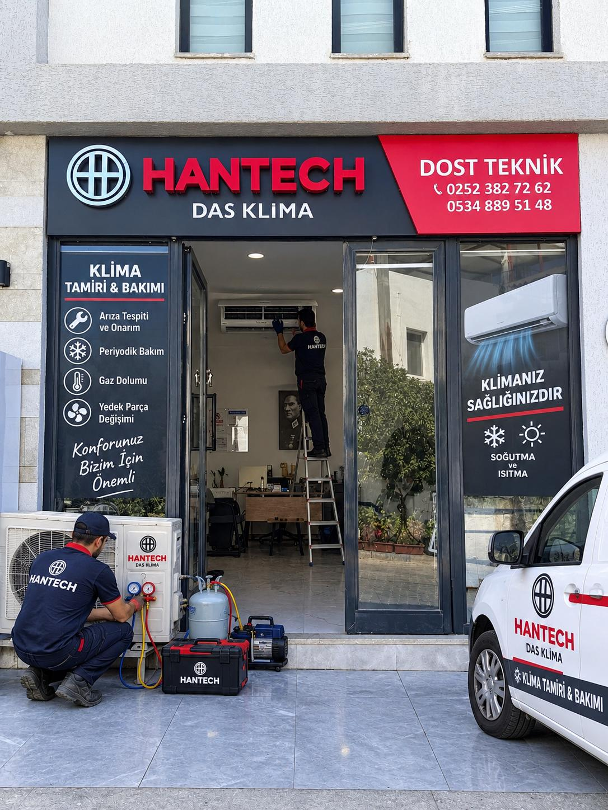

Klima Gaz Kontrolü ve Dolumu
Klimanızın soğutma performansı düştüyse gaz kontrolü gerekebilir; ancak her performans sorunu gaz eksikliği anlamına gelmez. Dost Teknik, cihazın çalışma durumuna göre gaz ve kaçak kontrolü ihtiyacını değerlendirir.

Gaz işlemi öncesinde kontrol
Soğutucu akışkan kapalı devrede çalışır. Eksilme varsa sistemde kaçak olasılığının araştırılması önemlidir. Cihaz kontrol edilmeden yalnızca belirtiye bakarak gaz dolumu önermek doğru değildir. Uygun işlem, inceleme sonrasında belirlenir.
Cihazınızın marka/modelini ve yaşadığınız sorunu telefon veya WhatsApp üzerinden iletin. Gaz tipi ve gereken işlemler cihaz özelliklerine göre farklılık gösterebilir.
Sık sorulan soru
Klima gazı her yıl doldurulmalı mı?+
Hayır. Soğutucu akışkan kapalı sistemde dolaşır; her yıl gaz dolumu gerektiren genel bir kural yoktur. Eksilme varsa kaçak ihtimali değerlendirilmelidir.
Hemen
konuşalım.
Servis ihtiyacınızı ve bulunduğunuz bölgeyi bize iletin.